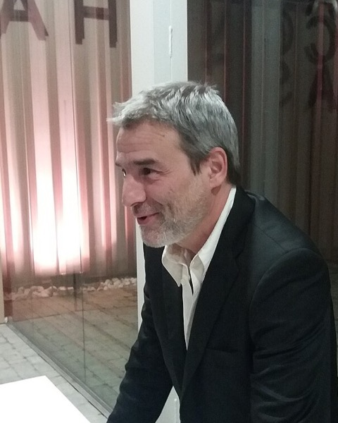

Ficha de personaje
¿Quién es el Cardenal en El Director?
El Cardenal es Antonio Fernández-Galiano, presidente de Unidad Editorial, la empresa que publica El Mundo, cuando David Jiménez dirigió el periódico. En la película se llama Cardenal y lo interpreta Alberto San Juan.
Confirmado



- En el libro
- “El Cardenal”, apodo
- En la película
- Cardenal, el editor del diario
- Actor
- Alberto San Juan
- Fuentes
- Wikipedia (libro), Infobae y Cineconn (película)
En el libro
Fernández-Galiano es quien ofrece a Jiménez la dirección de El Mundo en 2015. Jiménez lo identifica con el apodo de “El Cardenal”, uno de los que usa para la dirección y la redacción del diario. Tras su despido en 2016, Jiménez demandó a la empresa; según Wikipedia, ambas partes llegaron a un acuerdo económico que no impedía publicar el libro.
En la película
La sinopsis oficial lo presenta como el editor que protege los intereses ocultos del diario, con los que choca la idea de periodismo riguroso del nuevo director. Infobae indicó en julio de 2026 que el personaje está inspirado en Fernández-Galiano.
Sinopsis oficial
Un corresponsal con más de veinte años cubriendo guerras es nombrado director de un gran diario nacional. Su defensa del periodismo riguroso choca con los intereses ocultos del periódico, protegidos por Cardenal, el editor.
Resumen de la sinopsis de Beta Fiction Spain
Léelo y míralo
El libro cuenta la versión de Jiménez con más detalle que la película. La película llega a los cines el 20 de noviembre.